第13回 モデル選択
当てはまりは複雑さとともに良くなる。罰を足すか、外の行で測る
第I部 理論
場面①：272回の噴出
間欠泉の 272 回の噴出。長く噴くと次まで長く待つ。塊は2つに見える。
場面②：ℓは上がり続ける

混合正規分布を当てはめる。群を増やすと \hat\ell は上がり続ける。2つの塊のところで止まらない。
場面③：Jも下がり続ける
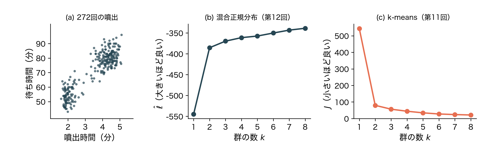
同じ2列にk-means。J は下がり続ける。どちらの目的関数も、k が大きいほど「良い」値になる。
場面④：前にも見た
| 回 | 複雑さのつまみ | 手元の行で測ると | 選び方 |
|---|---|---|---|
| 第2回 | 多項式の次数 | 訓練誤差は下がる一方 | テストの行で測る |
| 第4回 | 罰の強さ \lambda | \lambda=0 が最小 | 交差検証（クロスバリデーション、CV） |
| 第8回・第11回 | 群の数 k | J は下がる一方 | ？ |
| 第12回 | k と共分散の型 | \hat\ell は上がる一方 | ？ |
つまみを回すほど、手元の行での当てはまりは良くなる。群の数でも同じことが起きている。
今回の問い
第12回の最後に、次の問いを残した。
群の数 k を、どう選ぶ？
今回覚える言葉
- 共分散の型
- パラメータの数 d
- BIC・AIC
- 交差検証（クロスバリデーション、CV）の対数尤度
- V分割CV（V-fold CV）
まず候補を並べる
- 選ぶには、まず候補を並べる
- 第12回の混合正規分布は、群の数 k のほかに、共分散行列 \boldsymbol\Sigma_q の自由さでも大きさが変わる
候補の形を、人工データで見ておく。
モデル①：トースト120枚
ここでは人工的なデータを使う。
3台のトースターで焼いたトースト120枚の、焼き時間と焼き色（標準化した値）。
どの1枚がどの台で焼かれたかは、記録していない。

型①：群ごと（full）

k=3 を当てはめる。楕円の傾きと大きさが群ごとに自由。斜めの帯に沿う細長い楕円も描ける。
型②：共通（tied）

どの群も同じ形の楕円。第6回のLDAから、ラベルを隠したものにあたる。
型③：対角（diag）
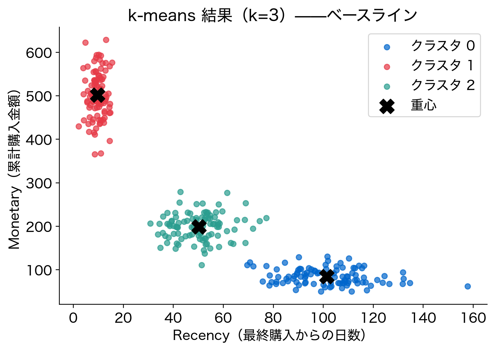
楕円の軸が座標軸に沿うものに限る。斜めの帯に沿う楕円は描けない。
型④：球（spherical）

群ごとに大きさだけが違う円。候補は、群の数 k とこの4つの型の組。
モデル②：大きいは小さいを含む
\pi_1f_1(x)+\pi_2f_2(x)\ \xrightarrow{\ \pi_2=0\ }\ f_1(x)
1変数・2群。\pi_2 を0にすれば k=1 のモデルになる。k 群は、k+1 群の特別な場合。
モデル③：型も入れ子
\text{球}\ \subset\ \text{対角}\ \subset\ \text{群ごと},\qquad \text{共通}\ \subset\ \text{群ごと}
対角の値をそろえれば球。群ごとの型で非対角を0にすれば対角、全群を同じにすれば共通。
次の問い：入れ子だと？
- 候補は入れ子になっている
- 候補ごとに \ell を最大にし、その値で比べたい
入れ子の候補を当てはまりで比べると、何が起きるか。
目的関数①：各候補の最大
\hat\ell_k=\max_{\pi,\,\boldsymbol\mu,\,\boldsymbol\Sigma}\ \sum_{i=1}^{n}\log\sum_{q=1}^{k}\pi_qN\bigl(\tilde{\boldsymbol x}_i;\boldsymbol\mu_q,\boldsymbol\Sigma_q\bigr)
第12回のEMで、候補ごとに \ell を最大にした値。行ごとの和で書いた。
目的関数②：行列で書く
\hat\ell_k=\max_{\pi,\,\mathbf C,\,\boldsymbol\Sigma}\ \mathbf 1_n^\top\log\bigl(\boldsymbol\Phi\mathbf 1_k\bigr)
\boldsymbol\Phi は \phi_{iq}=\pi_qN(\tilde{\boldsymbol x}_i;\boldsymbol\mu_q,\boldsymbol\Sigma_q) を並べた n\times k 行列（第12回）。
目的関数③：上がる一方
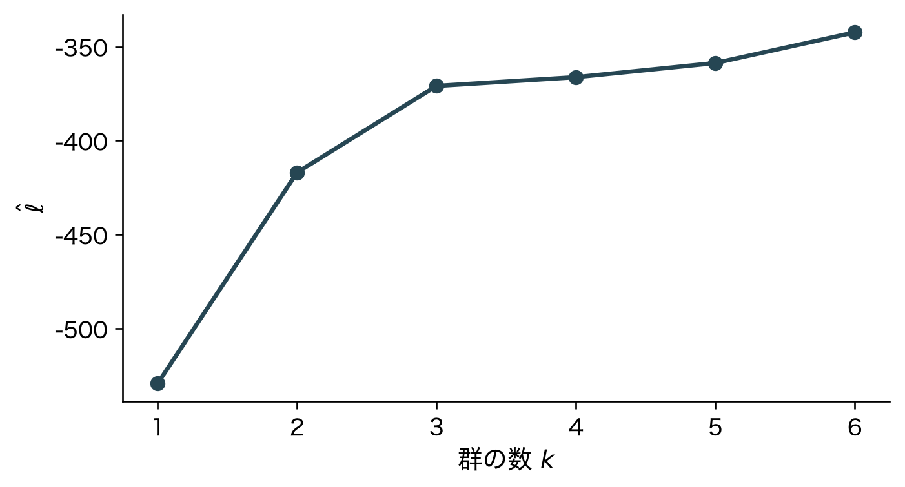
トーストの人工データ（群ごとの型）。作った群は3つなのに、\hat\ell_k はその先も上がる。
目的関数④：下がらない理由
\hat\ell_{k+1}\ \ge\ \hat\ell_k
k+1 群は、1つの群の \pi を0にすれば k 群の最良の答えを作れる。最大化の範囲が広がるので、最大値は下がらない。
目的関数⑤：−2ℓは二乗誤差
-2\log f(x_i)=\frac{(x_i-\mu)^2}{\sigma^2}+\log(2\pi\sigma^2)
1変数・1群・1行。-2 倍した対数尤度は、二乗誤差の仲間。小さいほど良い「当てはまりの悪さ」になる。
目的関数⑥：全行で足す
-2\ell=\frac{\sum_{i=1}^{n}(x_i-\mu)^2}{\sigma^2}+n\log(2\pi\sigma^2)
第1回の残差平方和を \sigma^2 で割り、定数を足したもの。
目的関数⑦：所属が見えれば
-2\ell_{\mathbf G}=\frac{\lVert\mathbf X-\mathbf G\mathbf C\rVert_F^2}{\sigma^2}+np\log(2\pi\sigma^2)-2\sum_{i,q}g_{iq}\log\pi_q
p 変数・k 群で、所属 \mathbf G が見え、共分散が共通の球 \sigma^2\mathbf I のとき。p=1、k=1 で前の式に戻る。
目的関数⑧：Jが中にいる
\frac{\lVert\mathbf X-\mathbf G\mathbf C\rVert_F^2}{\sigma^2}=\frac{J}{\sigma^2}
第1項は第11回の J。J が下がることと \hat\ell が上がることは、同じ現象。
次の問い：何を数えるか
- 当てはまりの悪さ -2\hat\ell は、k とともに下がる一方
- 大きいモデルほど、動かせるパラメータが多い
その多さを1つの数で表したい。自由に動かせるパラメータの数 d を数える。
数える①：1変数・2群
\underbrace{\pi_1}_{1}\quad\underbrace{\mu_1,\ \mu_2}_{2}\quad\underbrace{\sigma_1^2,\ \sigma_2^2}_{2}\qquad d=5
\pi_2=1-\pi_1 は数えない。\pi_1 が決まれば決まり、自由に動かせないから。
数える②：分散を共通に
\underbrace{\pi_1}_{1}\quad\underbrace{\mu_1,\ \mu_2}_{2}\quad\underbrace{\sigma^2}_{1}\qquad d=4
第6回のLDAと同じ置き方。k=1 なら、平均と分散だけの d=2。
数える③：Σは対称
\boldsymbol\Sigma_q=\begin{pmatrix}\sigma_{11}&\sigma_{12}\\ \sigma_{12}&\sigma_{22}\end{pmatrix}
左下は右上と同じ値。数えるのは対角と上半分の p(p+1)/2 個（p=2 なら3個）。
数える④：p変数・k群
d=\underbrace{(k-1)}_{\pi}+\underbrace{kp}_{\boldsymbol\mu_q}+\underbrace{k\,\tfrac{p(p+1)}{2}}_{\boldsymbol\Sigma_q}
群ごとの型。p=1、k=2 で 1+2+2=5 に戻る。
数える⑤：型ごとの数
| 型 | 共分散の数 | d（p=2） | d（p=2、k=3） |
|---|---|---|---|
| 群ごと（full） | k\,p(p+1)/2 | 6k-1 | 17 |
| 共通（tied） | p(p+1)/2 | 3k+2 | 11 |
| 対角（diag） | kp | 5k-1 | 14 |
| 球（spherical） | k | 4k-1 | 11 |
平均と混合比率の (k-1)+kp はどの型も同じ。違いは共分散の分だけ。
数える⑥：列が多いと
p=10,\ k=3:\qquad d=2+30+165=197
群ごとの型の第3項は、p の2乗で増える。列が多いと、d はすぐに行の数を超える。
次の問い：どう割り引くか
- -2\hat\ell は、k とともに下がる一方
- d は、k とともに増える一方
増えた d の分だけ、-2\hat\ell を割り引いて比べたい。1つ増えるごとに、いくら割り引くか。
BIC：罰を足す
\mathrm{BIC}=\underbrace{-2\hat\ell}_{\text{当てはまりの悪さ}}+\underbrace{d\log n}_{\text{罰}}
小さいほど良い。k を増やすと、前の項は下がり、後の項は上がる。
BIC：重みはlog n
\hat\ell-\frac{d}{2}\log n\ \xrightarrow{\ \times(-2)\ }\ -2\hat\ell+d\log n
モデルそのものの出やすさを、n が大きいとして近似した形。パラメータ1つにつき \frac12\log n の割引。重みは決まっている。
BIC：行列で
\mathrm{BIC}(k,\text{型})=-2\,\mathbf 1_n^\top\log\bigl(\hat{\boldsymbol\Phi}\mathbf 1_k\bigr)+d(k,\text{型})\log n
候補ごとに1つの数。k\times型の表に並べ、最小を選ぶ。
BIC：第4回の罰と比べる
| 第4回（リッジ回帰） | 今回（BIC） | |
|---|---|---|
| 罰の相手 | 係数の大きさ \lVert\boldsymbol\beta\rVert_2^2 | パラメータの数 d |
| 罰の重み | \lambda（CVで選ぶ） | \log n（決まっている） |
| 罰を足す場所 | 推定の目的関数の中 | 推定が終わった後 |
BICでは、推定はそのまま最尤法。比べるときにだけ罰を使う。
AIC：罰の重みを2に
\mathrm{AIC}=-2\hat\ell+2d
n\ge8 なら \log n>2。BICの方が罰が重く、小さいモデルを選びやすい。
次の問い：罰を使わずに
- BICは、罰の重みを \log n と決めて割り引いた
- 第2回：学習に全てのデータを使わない。使わなかった行で測った
- 第4回：交差検証（クロスバリデーション、CV）で \lambda を選んだ
対数尤度も、推定に使わなかった行で測れないか。
外の行で測る
\ell_{\text{外}}=\sum_{i\in\text{外}}\log\sum_{q=1}^{k}\hat\pi_qN\bigl(\tilde{\boldsymbol x}_i;\hat{\boldsymbol\mu}_q,\hat{\boldsymbol\Sigma}_q\bigr)
推定に使わなかった行の出やすさ。パラメータには、手元の行で推定した値を入れる。
外の行は出にくい
\ell_{\text{外}}=\sum_{i\in\text{外}}\log\sum_{q=1}^{k}\hat\pi_qN\bigl(\tilde{\boldsymbol x}_i;\hat{\boldsymbol\mu}_q,\hat{\boldsymbol\Sigma}_q\bigr)
群を増やしすぎると、手元の行に合わせた細かい群や潰れた楕円ができる。新しい行はそこから出にくく、\ell_{\text{外}} は下がる。
1組を測る側に回す

1回だけ取り分けると、どの行を取り分けたかで値が揺れる（第2回）。行を5組に分け、4組でEM、残りの1組で測る。
どの組も1度ずつ測る

測る組を順に替える。どの行もちょうど1度だけ測る側に回り、そのときのパラメータはその行を見ていない。
V分割CV（V-fold CV）
\ell_{\mathrm{CV}}=\sum_{v=1}^{V}\mathbf 1^\top\log\bigl(\boldsymbol\Phi_v^{(-v)}\mathbf 1_k\bigr)
\boldsymbol\Phi_v^{(-v)} は、第 v 組を除いて推定し、第 v 組の行で計算した \boldsymbol\Phi。第4回の V 分割交差検証と同じ手続き。最大を選ぶ。
CVをBICと並べる
-2\ell_{\mathrm{CV}}\qquad\text{と}\qquad\mathrm{BIC}=-2\hat\ell+d\log n
どちらも対数尤度を -2 倍した単位で、小さいほど良い。同じ目盛りに並べて比べられる。
道具がそろった
- 候補：群の数 k と、4つの共分散の型
- 罰を足す：d を数えて \mathrm{BIC}=-2\hat\ell+d\log n
- 外の行で測る：V 分割の \ell_{\mathrm{CV}}
これを、計算する順に並べる。
アルゴリズム：kと型を選ぶ
- 候補を並べる：k=1,\dots,k_{\max} と、4つの型
- 当てはめる：候補ごとに全 n 行でEM（第12回、ランダムスタート）→ \hat{\boldsymbol\Phi}、\hat\ell=\mathbf 1_n^\top\log(\hat{\boldsymbol\Phi}\mathbf 1_k)
- 数える：d(k,\text{型}) → \mathrm{BIC}=-2\hat\ell+d\log n を k\times型 の表 \mathbf B に入れる
- CV：行を V 組に分け、各 v で \mathbf X_{(-v)} にEM → \boldsymbol\Phi_v^{(-v)}（n_v\times k）→ \ell_{\mathrm{CV}}=\sum_v\mathbf 1^\top\log(\boldsymbol\Phi_v^{(-v)}\mathbf 1_k) を表に
- 選ぶ：\mathbf B の最小、または \ell_{\mathrm{CV}} の最大。CVで選んだ候補は全行で当てはめ直す
次の問い：2つは何を選ぶか
- トーストは3台で作った。データを作った群の数は3
- 群ごとの型で、k=1,\dots,6 を当てはめる
BICとCVは、それぞれどの k を選ぶか。
帰結①：悪さは下がる一方
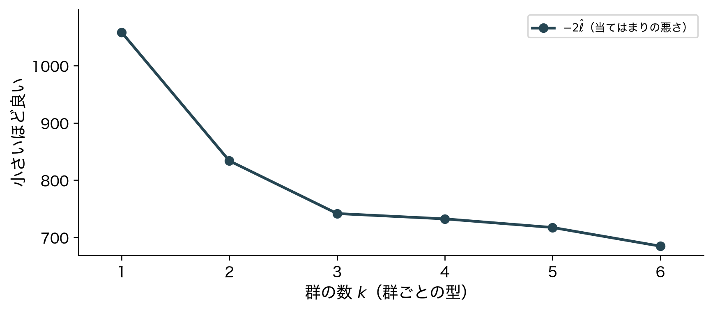
トーストの人工データ（作った群は3つ）。-2\hat\ell は k とともに下がり続ける。
帰結②：罰は上がる一方

罰 d\log n（橙の幅）は k とともに広がる。1群ふえるごとに 6\log n = 28.7。
帰結③：和は谷を持つ

BIC（赤）は k= 3 で最小。作った群の数に一致。
帰結④：谷の位置

2→3群：-2\hat\ell が 92.1 下がり、罰の増分 28.7 を上回る。3→4群：9.3 しか下がらず、届かない。
帰結⑤：外の行も同じ谷
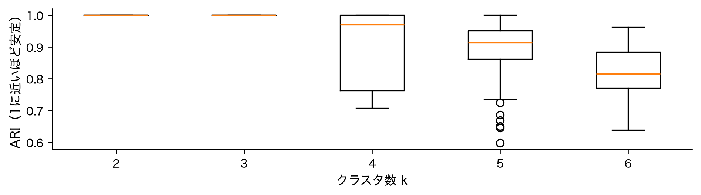
罰を足さずに外の行で測っても、k= 3 で最良。増やしすぎた群は新しい行を出しにくい。
帰結⑥：罰が軽いと

罰の重みを2にしたAICは k= 6 を選ぶ。罰の重みで答えが変わる。
帰結⑦：作り直すと
| データ（何通り目か） | 1 | 2 | 3 | 4 | 5 | 6 | 7 | 8 |
|---|---|---|---|---|---|---|---|---|
| BIC が選ぶ k | 3 | 3 | 3 | 3 | 3 | 3 | 3 | 3 |
| AIC が選ぶ k | 3 | 3 | 6 | 5 | 3 | 6 | 3 | 3 |
同じ作り方で作り直した8通りのデータ。BICは 8 通り、AICは 5 通りで k=3。AICは罰が軽い分、大きい側に振れやすい。
帰結⑧：型も同じ表で

4つの型のBIC。最小は群ごとの型・k= 3（斜めの帯を楕円で描ける型）。
帰結⑨：k-meansのJは？
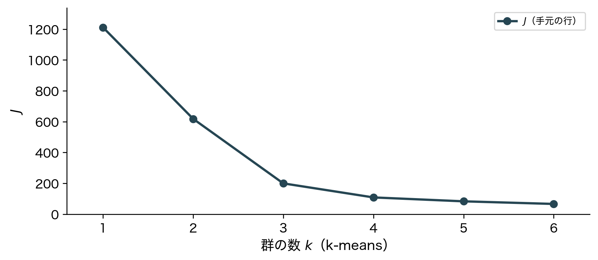
J は尤度ではないので、BICの第1項にならない。では、外の行で測ったらどうか。
帰結⑩：Jは外でも下がる
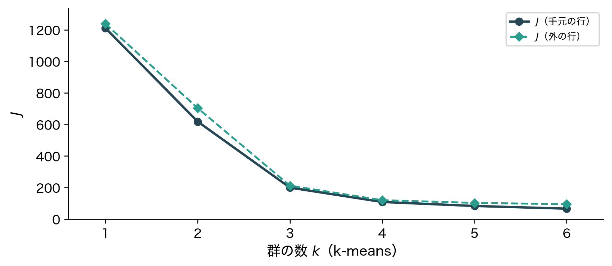
外の行で測っても下がり続ける。代表点が増えれば、新しい行にも近い代表点がある。
帰結⑪：2つを並べる
| 罰を足す（BIC） | 外の行で測る（CV） | |
|---|---|---|
| 測るもの | 手元の行の -2\hat\ell ＋ d\log n | 外の行の -2\ell_{\mathrm{CV}} |
| 要るもの | 尤度と、パラメータの数 d | 尤度（新しい行の出やすさ） |
| 当てはめの回数 | 候補ごとに1回 | 候補ごとに V 回 |
帰結⑫：目指すもの
| 罰を足す（BIC） | 外の行で測る（CV） | |
|---|---|---|
| 測るもの | 手元の行の -2\hat\ell ＋ d\log n | 外の行の -2\ell_{\mathrm{CV}} |
| 要るもの | 尤度と、パラメータの数 d | 尤度（新しい行の出やすさ） |
| 当てはめの回数 | 候補ごとに1回 | 候補ごとに V 回 |
| 目指すもの | データを作ったモデル | 新しい行をよく出すモデル |
| k-meansの J | 尤度が無いので使えない | 下がり続けるので使えない |
BICは「データを作ったモデル」を、AICとCVは「新しい行をよく出すモデル」を目指す。
位置づけ：推定の外側
| 最小二乗法 | 最尤法 | |
|---|---|---|
| y を近似する | 第1回・第5回 | 第6回 |
| 行を群に分ける | 第11回（k-means） | 第12回（混合正規分布） |
第1〜12回：マスの中でパラメータを推定した。今回：そのモデルをどの大きさにするか（推定の一段外側）。
第II部 実データ解析
第II部：実データで試す
- 第I部の人工データは、現象がはっきり出るように作った
- 実データは、理論どおりにいくとは限らない
- 外れたら、その理由を第I部の道具で考える
うまくいったら最高。
理論の予想
- 第I部：\hat\ell は上がる一方。BICとCVは谷を持ち、トーストでは作った群の数を選んだ
- 予想①：どの型でも、\hat\ell は k とともに上がり続けるはず
- 予想②：BICは、目で見た2つの塊（斜めの楕円2つ）を選ぶはず
- 予想③：CVも、BICと同じ答えを選ぶはず
データ：272回の噴出
| 行 | オールドフェイスフル間欠泉の噴出 272 回 |
| \mathbf X | 噴出時間（平均 3.49 分）と次までの待ち時間（平均 70.9 分）。2列とも標準化 |
| 正解 | 無い（何種類の噴出があるかは誰も知らない） |
| 候補 | k=1,\dots,6 × 4つの型 ＝ 24 通り |
場面の数字
| k | 1 | 2 | 3 | 4 | 5 | 6 | 7 | 8 |
|---|---|---|---|---|---|---|---|---|
| \hat\ell | -545.0 | -385.5 | -369.6 | -361.3 | -357.4 | -350.2 | -343.2 | -338.8 |
| J | 544.0 | 79.6 | 56.3 | 43.9 | 34.3 | 27.3 | 23.8 | 21.3 |
場面①〜③で見た数字（混合正規分布の \hat\ell、k-meansの J）。\hat\ell は上がり、J は下がり続けた。この2列に、推定の外の物差しを当てる。
手続き：何をどう計算したか
- 当てはめる：24通りの候補ごとに、ライブラリのGaussianMixtureでEM（初期値20通り、共分散の対角に 10^{-6}）
- BIC：d(k,\text{型}) を自分で数え、\mathrm{BIC}=-2\hat\ell+d\log n を計算する
- 交差検証（クロスバリデーション、CV）：行を無作為に5組に分け、残りの4組でEM、測る組で \ell を足す
- 読む：選んだ群を、分の単位に戻して並べる
- 揺らす：5組への分け方を10通りに変えて、CVを回し直す
結果①：ℓは上がる一方
| 型 | k=1 | k=2 | k=3 | k=4 | k=5 | k=6 |
|---|---|---|---|---|---|---|
| 群ごと | -545.0 | -385.5 | -369.6 | -361.3 | -357.4 | -350.2 |
| 共通 | -545.0 | -395.4 | -381.5 | -376.0 | -371.4 | -371.3 |
| 対角 | -771.9 | -403.0 | -382.2 | -368.1 | -361.0 | -357.1 |
| 球 | -771.9 | -423.3 | -401.2 | -385.5 | -376.9 | -369.0 |
24通りの \hat\ell。どの型でも、k とともに下がらない。予想どおり。
結果②：BICの表
| 型 | k=1 | k=2 | k=3 | k=4 | k=5 | k=6 |
|---|---|---|---|---|---|---|
| 群ごと | 1,118.0 | 832.6 | 834.6 | 851.5 | 877.4 | 896.5 |
| 共通 | 1,118.0 | 835.6 | 824.7 ★ | 830.5 | 838.0 | 854.8 |
| 対角 | 1,566.2 | 856.5 | 842.9 | 842.7 | 856.5 | 876.7 |
| 球 | 1,560.6 | 885.9 | 864.0 | 855.2 | 860.4 | 866.9 |
最小（★）は共通の型・k= 3。目で見た塊は2つ。予想は外れた。
結果②：BICの答え
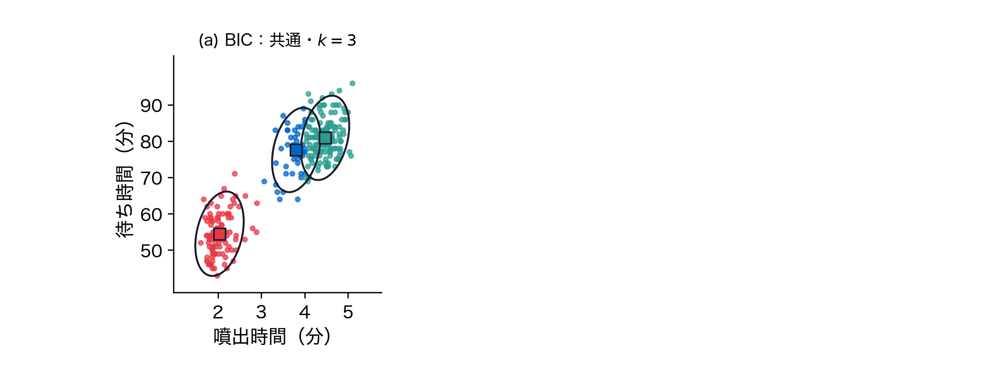
BICの答え。短い噴出の塊を1つの群で、長い噴出の塊を2つの群で描いた。
なぜ3群か①：群ごとの型では
| 群ごとの型 | 1\to2 | 2\to3 | 3\to4 |
|---|---|---|---|
| -2\hat\ell の下がり幅 | 319.1 | 31.6 | 16.7 |
| 罰の増分 6\log n | 33.6 | 33.6 | 33.6 |
I-7の帰結④と同じ読み方。2\to3 では下がり幅が罰の増分に届かない。群ごとの型の中では、予想どおり k= 2。
なぜ3群か②：同じ罰で比べる
| 候補 | d | \hat\ell | BIC |
|---|---|---|---|
| 群ごと・k=2 | 11 | -385.5 | 832.6 |
| 共通・k=3 | 11 | -381.5 | 824.7 |
型をまたぐと答えが変わる。2つの候補は d が同じなので罰も同じ。\hat\ell の差 3.9 で、共通の型・k= 3 が勝った。
なぜ3群か③：群を分で読む
| BIC の群 | 行数 | 噴出時間の平均 | 待ち時間の平均 |
|---|---|---|---|
| 1 | 97 | 2.04 分 | 54.5 分 |
| 2 | 42 | 3.81 分 | 77.6 分 |
| 3 | 133 | 4.47 分 | 80.9 分 |
長い噴出の塊は、楕円1つでは描けない。短めの側に裾があり、BICはそこに群を1つ置いた。「正規分布の楕円の混合」という前提が、少しずれている。
読み方：3種類の噴出か
- 群の数3は、噴出の仕組みが3種類あるという意味ではない
- 正規分布の楕円で塊を描くと決めたうえで、何を測る基準を置いたかで決まる
結果③：CVの表
| 型 | k=1 | k=2 | k=3 | k=4 | k=5 | k=6 |
|---|---|---|---|---|---|---|
| 群ごと | -549.2 | -401.0 | -401.9 | -406.0 | -413.8 | -430.3 |
| 共通 | -549.2 | -406.1 | -396.6 | -400.3 | -402.6 | -405.9 |
| 対角 | -775.5 | -417.3 | -408.0 | -395.7 ★ | -401.0 | -409.0 |
| 球 | -775.5 | -436.1 | -429.8 | -422.3 | -420.7 | -417.1 |
5分割の \ell_{\mathrm{CV}}。最大（★）は対角の型・k= 4。BICと違う答え。予想は外れた。
結果③：CVの答え
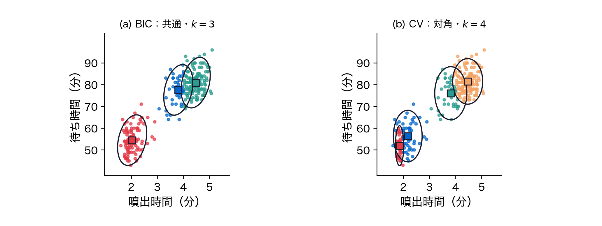
CVの答え。楕円の軸は座標軸に沿い、斜めに伸びた塊をそれぞれ2つの楕円でつないだ。
なぜCVは違うか①：目指すもの
| 基準 | 測ったもの | 選んだもの |
|---|---|---|
| \hat\ell（罰なし） | 手元の行の出やすさ | いつもいちばん大きい候補 |
| BIC | 手元の出やすさ − 罰 | 共通・k= 3 |
| AIC | 手元の出やすさ − 軽い罰 | 群ごと・k= 4 |
| CV | 外の行の出やすさ | 対角・k= 4 |
CVとAICは、新しい行をよく出すモデルを目指す（I-7）。どちらもBICより大きい k を選んだ。
なぜCVは違うか②：分け方
| CV が選んだ候補 | 分け方10通りのうち |
|---|---|
| 共通・k=3 | 4 回 |
| 対角・k=4 | 2 回 |
| 対角・k=5 | 2 回 |
| 群ごと・k=4 | 1 回 |
| 共通・k=4 | 1 回 |
5組への分け方だけを変えると、選ばれる候補が変わる。1位と2位の差（最初の分け方で 1.0）が、分け方による揺れより小さい。
確認：dとBICの計算
| 型 | k=1 | k=2 | k=3 | k=4 | k=5 | k=6 |
|---|---|---|---|---|---|---|
| 群ごと | 5 | 11 | 17 | 23 | 29 | 35 |
| 共通 | 5 | 8 | 11 | 14 | 17 | 20 |
| 対角 | 4 | 9 | 14 | 19 | 24 | 29 |
| 球 | 3 | 7 | 11 | 15 | 19 | 23 |
型ごとの式で数えた d（p=2）。このBICはライブラリのBICと一致（差は最大 0.0e+00）。第12回の手順で書いたEMの \hat\ell とも一致（差 6.1e-06）。
落とし穴①：dが行の数を超える
- ここでは人工的なデータを使う。作った群は3つと知っているので、選び方が壊れたことがはっきり見える
- 3台のトースターで30枚ずつ焼いた 90 枚の、表面 10 か所の焼き色（人工データ、90 行・10 列）
- 群ごとの型・k=3 で d= 197。行の数 90 を超える
群の行が列の数より少ないと、共分散行列が特異になり、楕円が潰れる（第12回）。
落とし穴②：罰では止まらない
| 対角に足す数 | k=1 | k=2 | k=3 | k=4 | k=5 | 選ぶ k |
|---|---|---|---|---|---|---|
| 10^{-2} | 3,298 | 3,334 | 3,454 | 3,591 | 3,705 | 1 |
| 10^{-4} | 3,298 | 3,334 | 3,454 | 3,540 | 3,474 | 1 |
| 10^{-6} | 3,298 | 3,334 | 3,454 | 3,494 | 3,216 | 5 |
| 10^{-8} | 3,298 | 3,334 | 3,454 | 3,448 | 2,958 | 5 |
| 10^{-10} | 3,298 | 3,334 | 3,454 | 3,401 | 2,700 | 5 |
群ごとの型のBIC。足す数を小さくすると、潰れた群の \hat\ell はいくらでも上がる。罰は決まった数なので、3 行目から下は k= 5。
落とし穴③：外の行なら
| 対角に足す数 | k=1 | k=2 | k=3 | k=4 | k=5 |
|---|---|---|---|---|---|
| 10^{-6} | -1,582 | -1,656 | -1,770 | -1,956 | -2,997 |
| 10^{-10} | -1,582 | -1,656 | -1,712 | -1,956 | -2,997 |
同じデータの \ell_{\mathrm{CV}}。最大は k= 1。潰れた群は外の行を出せない。ただし作った群は3つ。
落とし穴④：型を小さくする
| 対角の型 | k=1 | k=2 | k=3 | k=4 | k=5 |
|---|---|---|---|---|---|
| d | 20 | 41 | 62 | 83 | 104 |
| BIC | 3,870 | 3,317 | 2,993 | 3,043 | 3,093 |
対角の型なら、BICは k= 3 を選び、作った3台を 100%の行で言い当てた。列が多いときは、k と同時に型を小さくする。
このデータでわかったこと
- 予想どおり：どの型でも、\hat\ell は k とともに上がり続けた
- 半分外れた：BICは群ごとの型では k= 2、型をまたぐと共通の型・k= 3。長い噴出の塊が楕円1つに収まらない
- 外れた：CVは対角の型・k= 4。新しい行を出す側へ振れ、分け方でも揺れた
- 列が多く行が少ないと、BICもCVも働かない。型を小さくする
締め
まとめ①：良くなる一方

大きいモデルは小さいモデルを含む。\hat\ell は上がり、J は下がる一方。推定法では k を選べない。
まとめ②：罰か、外の行か
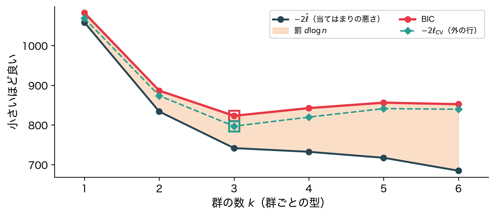
罰を足すBIC（d は型ごとに数える）か、外の行で測る交差検証（クロスバリデーション、CV）か。
まとめ③：基準で答えが違う
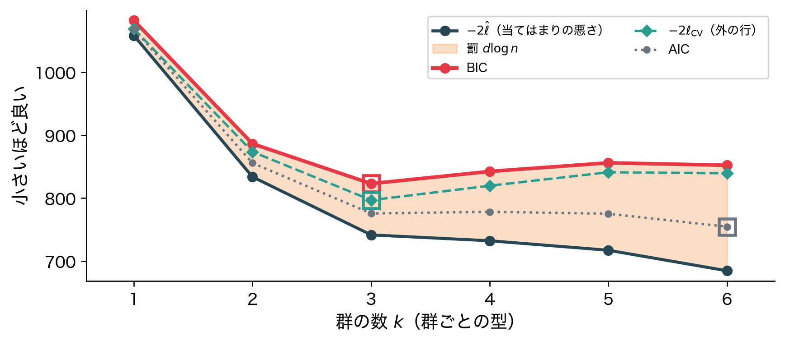
置いた基準が違えば答えも違う。列が多いと罰は止まらず、CVは分け方で揺れる。
発展：外に置く物差し
| 外に置くもの | 例 | 一言 |
|---|---|---|
| 罰 | BIC・AIC（今回） | パラメータの数で割り引く |
| 外の行 | CV（今回） | 新しい行の出やすさ |
| 構造の無いデータ | Gap統計 | 一様に散らばるデータの J と比べる |
| 別の目的関数 | シルエット係数 | 自分の群に近く、隣の群から遠いか |
| 再現性 | 安定性 | 行を取り直しても同じ群になるか |
次回予告①：数の表
- 第1〜13回の \mathbf X：行は個体、列は測った量（数）
- 群の数は、推定の外に基準を置いて決めた
次回予告②：カテゴリの表
- 行も列もカテゴリ、マスの中身は度数（何件あったか）なら？
- 行と列が独立なら、どの度数になるはずか。そこからのずれを読みたい
問い：行と列が両方カテゴリなら？